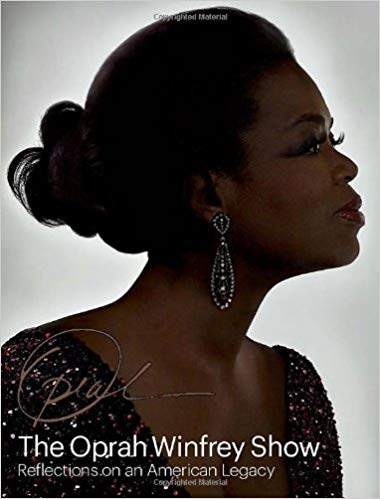
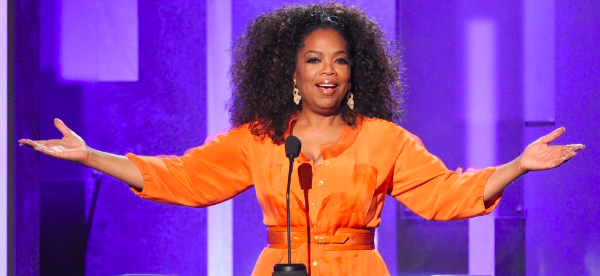

About Oprah
Oprah Winfrey (born Orpah Gail Winfrey; January 29, 1954) is an American media executive, actress, talk show host, television producer and philanthropist. She is best known for her talk show The Oprah Winfrey Show, which was the highest-rated television program of its kind in history and was nationally syndicated from 1986 to 2011 in Chicago. Dubbed the "Queen of All Media”, she was the richest African American of the 20th century and North America's first black multi-billionaire, and has been ranked the greatest black philanthropist in American history.She has also been sometimes ranked as the most influential woman in the world. Winfrey was born into poverty in rural Mississippi to a teenage single mother and later raised in inner-city Milwaukee. She has stated that she was molested during her childhood and early teens and became pregnant at 14; her son was born prematurely and died in infancy. Winfrey was then sent to live with the man she calls her father, Vernon Winfrey, a barber in Tennessee, and landed a job in radio while still in high school. By 19, she was a co-anchor for the local evening news. Winfrey's often emotional, extemporaneous delivery eventually led to her transfer to the daytime talk show arena, and after boosting a third-rated local Chicago talk show to first place, she launched her own production company and became internationally syndicated.
Credited with creating a more intimate confessional form of media communication, Winfrey popularized and revolutionized the tabloid talk show genre pioneered by Phil Donahue. Through this medium, Winfrey broke 20th-century taboos and allowed LGBT people to enter the mainstream through television appearances. In 1994, she was inducted into the National Women's Hall of Fame.
By the mid-1990s, Winfrey had reinvented her show with a focus on literature, self-improvement, mindfulness and spirituality. Though she was criticized for unleashing a confession culture, promoting controversial self-help ideas, and having an emotion-centered approach, she has also been praised for overcoming adversity to become a benefactor to others.Winfrey had also emerged as a political force in the 2008 presidential race, delivering about one million votes to Barack Obama in the razor close 2008 Democratic primary. In 2013, Winfrey was awarded the Presidential Medal of Freedom by President Obama and honorary doctorate degrees from Duke and Harvard. In 2008, she formed her own network, Oprah Winfrey Network.
Early life Winfrey's first name was spelled "Orpah" on her birth certificate after the biblical figure in the Book of Ruth, but people mispronounced it regularly and "Oprah" stuck. She was born in Kosciusko, Mississippi, to an unmarried teenage mother. She later said that her conception was due to a single sexual encounter and the couple broke up not long after. Her mother, Vernita Lee (1935–2018), was a housemaid. Winfrey's biological father is usually noted as Vernon Winfrey (born c. 1933), a coal miner turned barber turned city councilman who had been in the Armed Forces when she was born. However, Mississippi farmer and World War II veteran Noah Robinson Sr. (born c. 1925) has claimed to be her biological father.
A genetic test in 2006 determined that her matrilineal line originated among the Kpelle ethnic group, in the area that today is Liberia. Her genetic makeup was determined to be 89% Sub-Saharan African, 8% Native American, and 3% East Asian. However, the East Asian markers may, given the imprecision of genetic testing, actually be Native American. After Winfrey's birth, her mother traveled north, and Winfrey spent her first six years living in rural poverty with her maternal grandmother, Hattie Mae (Presley) Lee (April 15, 1900 – February 27, 1963), who was so poor that Winfrey often wore dresses made of potato sacks, for which the local children made fun of her. Her grandmother taught her to read before the age of three and took her to the local church, where she was nicknamed "The Preacher" for her ability to recite Bible verses. When Winfrey was a child, her grandmother would hit her with a stick when she did not do chores or if she misbehaved in any way.
At age six, Winfrey moved to an inner-city neighborhood in Milwaukee, Wisconsin, with her mother, who was less supportive and encouraging than her grandmother had been, largely as a result of the long hours she worked as a maid. Around this time, Lee had given birth to another daughter, Winfrey's younger half-sister, Patricia who later (in February 2003, at age 43) died of causes related to cocaine addiction.
By 1962, Lee was having difficulty raising both daughters so Winfrey was temporarily sent to live with Vernon in Nashville, Tennessee. While Winfrey was in Nashville, Lee gave birth to a third daughter who was put up for adoption (in the hope of easing the financial straits that had led to Lee's being on welfare) and was later also named Patricia. Winfrey did not learn she had a second half-sister until 2010. By the time Winfrey moved back with her mother, Lee had also given birth to a boy named Jeffrey, Winfrey's half-brother, who died of AIDS-related causes in 1989.
Winfrey has stated she was molested by her cousin, uncle, and a family friend, starting when she was nine years old, something she first announced to her viewers on a 1986 episode of her TV show regarding sexual abuse. When Winfrey discussed the alleged abuse with family members at age 24, they reportedly refused to believe her account. Winfrey once commented that she had chosen not to be a mother because she had not been mothered well. At 13, after suffering what she described as years of abuse, Winfrey ran away from home. When she was 14, she became pregnant but her son was born prematurely and he died shortly after birth. Winfrey later stated she felt betrayed by the family member who had sold the story of her son to the National Enquirer in 1990.
She began attending Lincoln High School in Milwaukee, but after early success in the Upward Bound program, was transferred to the affluent suburban Nicolet High School, where she says her poverty was constantly rubbed in her face as she rode the bus to school with fellow African-Americans, some of whom were servants of her classmates' families. She began to steal money from her mother in an effort to keep up with her free-spending peers, to lie to and argue with her mother, and to go out with older boys.
Her frustrated mother once again sent her to live with Vernon in Nashville, although this time she did not take her back. Vernon was strict but encouraging, and made her education a priority. Winfrey became an honors student, was voted Most Popular Girl, and joined her high school speech team at East Nashville High School, placing second in the nation in dramatic interpretation.
She won an oratory contest, which secured her a full scholarship to Tennessee State University, a historically black institution, where she studied communication. Her first job as a teenager was working at a local grocery store. At the age of 17, Winfrey won the Miss Black Tennessee beauty pageant. She also attracted the attention of the local black radio station, WVOL, which hired her to do the news part-time. She worked there during her senior year of high school, and again while in her first two years of college.
Winfrey's career choice in media would not have surprised her grandmother, who once said that ever since Winfrey could talk, she was on stage. As a child, she played games interviewing her corncob doll and the crows on the fence of her family's property. Winfrey later acknowledged her grandmother's influence, saying it was Hattie Mae who had encouraged her to speak in public and "gave me a positive sense of myself".